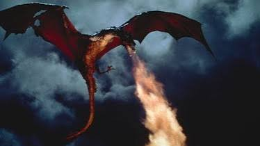

🔥 🐉 ⚔️ DRAGONSLAYER (1981) — CERTIFIED MGC VF-39

🏛 MGC LOWER COURT OF APPEALS
- ASSET TITLE: Dragonslayer (1981) – The Official Go-Motion Wyrm Ledger
- OFFICIAL REGISTRY GRADE: Certified MGC VF-39 (Very Fine / Borderline XF Crossover)
- LOWER COURT JURISDICTION: Judge Tina, Chief of Cult Classics
- CASE FILE: #062
📜 THE FORENSIC NARRATIVE BREAKDOWN & RECOVERY
Dragonslayer (1981) stands as a landmark dark-fantasy achievement by director Matthew Robbins, pairing a grim medieval setting with groundbreaking visual effects.
🚨 Key Planchet Flaws:
1. The Vermithrax Standard
- ILM’s “go-motion” wizardry—pioneered by Phil Tippett and Dennis Muren—gives the dragon Vermithrax Pejorative a heavy, terrifying realism that holds up remarkably well, anchoring the film’s highest-tier visual authority.
2. Human-Cast Friction
- While Peter MacNicol leads as the reluctant sorcerer’s apprentice Galen and Ralph Richardson provides seasoned weight as Ulrich, the central act suffers from sluggish pacing, routine dungeon sequences, and diluted momentum away from the creature feature.
3. The VF-39 Verdict
- Elevated by Alex North’s score and its uncompromisingly bleak atmosphere, the film peaks at a certified VF-39, resting just shy of an XF grade due to its uneven second-half human drama.
⚖️ THE CHIEF’S FINAL DECREE
- Tina strikes the desk with a heavy wrench:
“All hail Vermithrax Pejorative! Let the ledger show that while the humans drag their feet in the mud, ILM’s fire-breathing titan rules the very top shelf of the VF room!”
- 🔧💥 🐉 Case Closed. Certified MGC VF-39

• © 2026 MOVIE GRADING CONSENSUS. All Sovereign Rights Reserved.